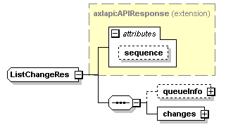
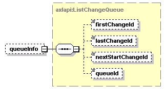
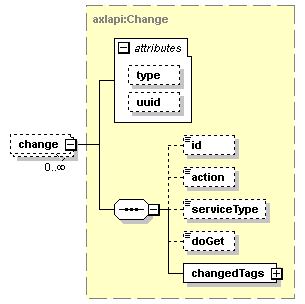

| diagram |  | ||||||||||||
| namespace | http://www.cisco.com/AXL/API/10.5 | ||||||||||||
| type | extension of axlapi:APIResponse | ||||||||||||
| properties |
|
||||||||||||
| children | queueInfo changes | ||||||||||||
| used by |
|
||||||||||||
| attributes |
|
||||||||||||
| source | <xsd:complexType name="ListChangeRes"> <xsd:complexContent> <xsd:extension base="axlapi:APIResponse"> <xsd:sequence> <xsd:element name="queueInfo" type="axlapi:ListChangeQueue" minOccurs="0"/> <xsd:element name="changes"> <xsd:complexType> <xsd:sequence> <xsd:element name="change" type="axlapi:Change" minOccurs="0" maxOccurs="unbounded"/> </xsd:sequence> </xsd:complexType> </xsd:element> </xsd:sequence> </xsd:extension> </xsd:complexContent> </xsd:complexType> |
element ListChangeRes/queueInfo
| diagram |  | ||||||
| type | axlapi:ListChangeQueue | ||||||
| properties |
|
||||||
| children | firstChangeId lastChangeId nextStartChangeId queueId | ||||||
| source | <xsd:element name="queueInfo" type="axlapi:ListChangeQueue" minOccurs="0"/> |
element ListChangeRes/changes
| diagram |  |
||
| properties |
|
||
| children | change | ||
| source | <xsd:element name="changes"> <xsd:complexType> <xsd:sequence> <xsd:element name="change" type="axlapi:Change" minOccurs="0" maxOccurs="unbounded"/> </xsd:sequence> </xsd:complexType> </xsd:element> |
element ListChangeRes/changes/change
| diagram |  | ||||||||||||||||||
| type | axlapi:Change | ||||||||||||||||||
| properties |
|
||||||||||||||||||
| children | id action serviceType doGet changedTags | ||||||||||||||||||
| attributes |
|
||||||||||||||||||
| source | <xsd:element name="change" type="axlapi:Change" minOccurs="0" maxOccurs="unbounded"/> |
XML Schema documentation generated by XMLSpy Schema Editor http://www.altova.com/xmlspy